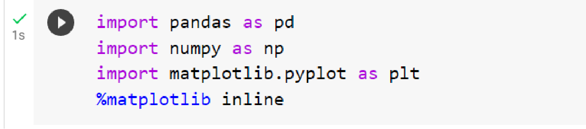
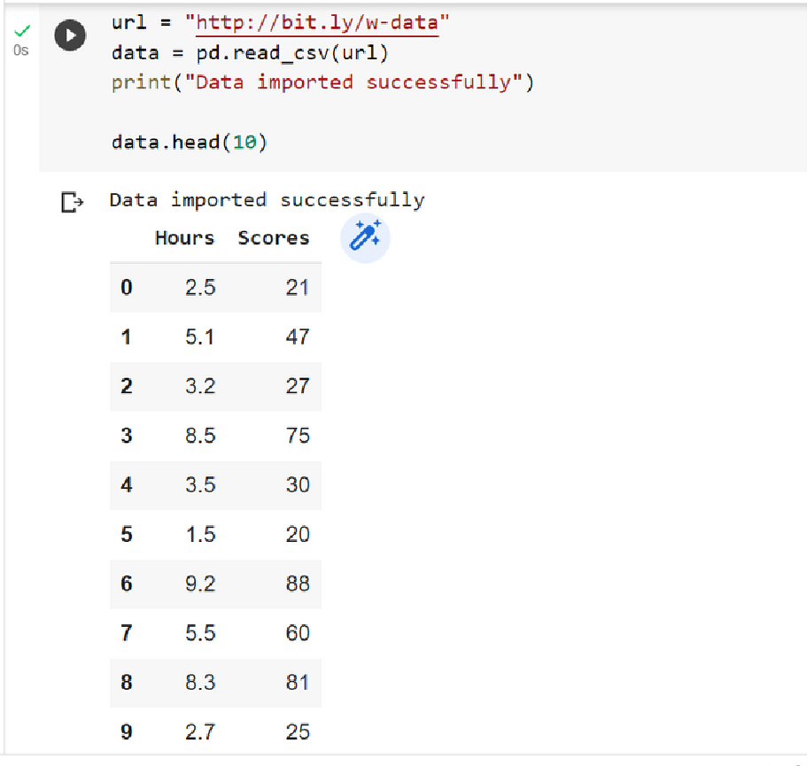
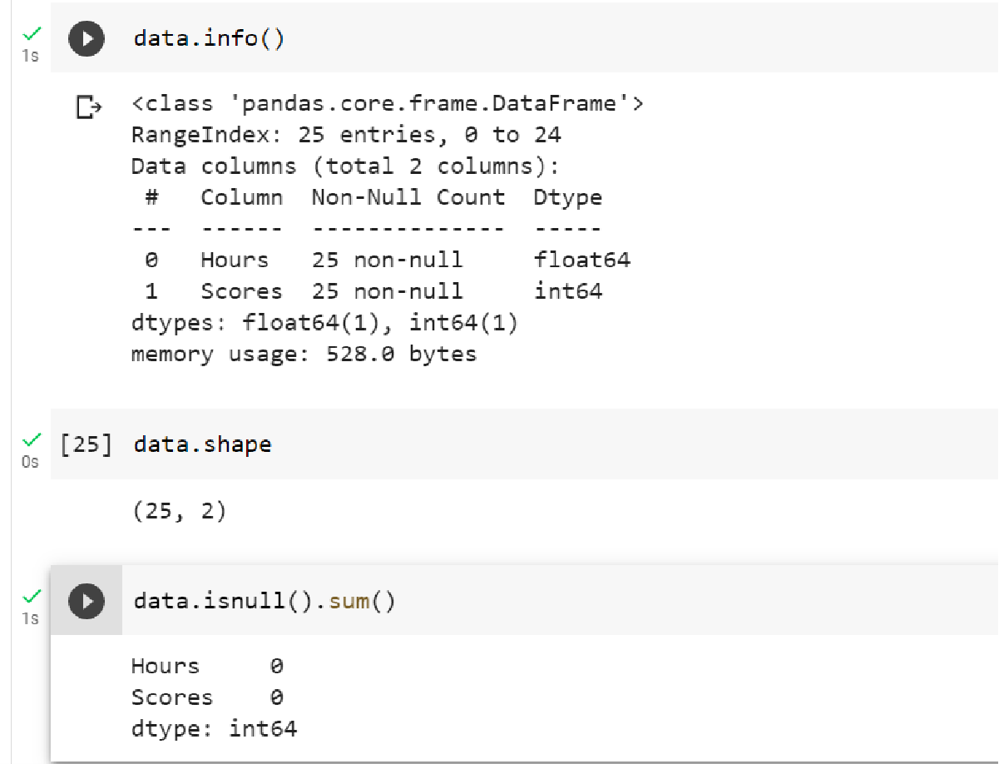
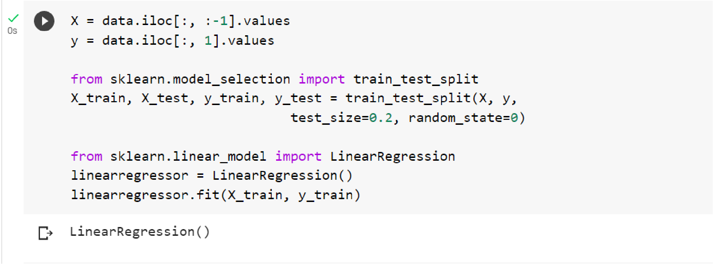
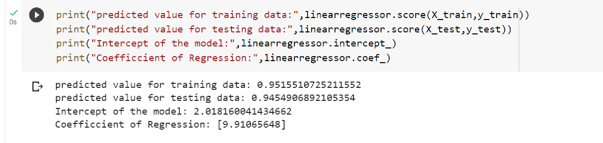
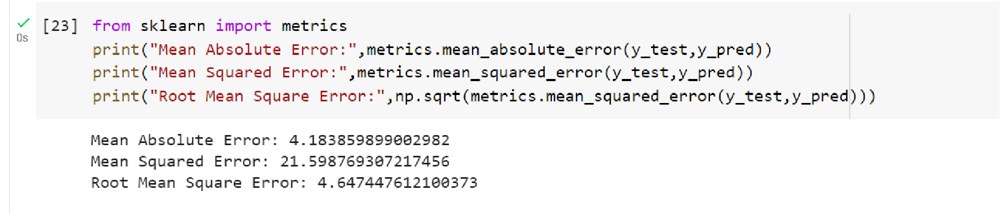
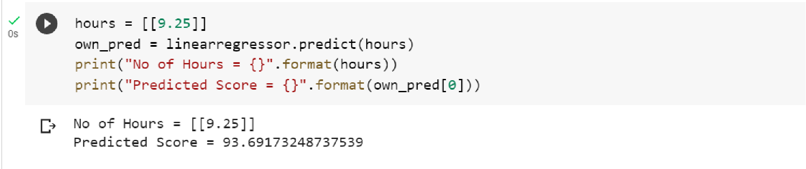

STUDENT DATASET:
In this regression task we will predict the percentage of marks that a student is expected to score based upon the number of hours they studied. This is a simple linear regression task as it involves just two variables.
IMPORTING THE LIBRARIES
This code snippet is importing the necessary libraries for data analysis and visualization. By importing these libraries, the code sets up the environment for data analysis, numerical operations, and visualizations using pandas, numpy, and matplotlib.
LOADING THE DATASET
This code imports a CSV dataset from a specified URL using the pandas library. The dataset is loaded into a DataFrame object called data. A confirmation message is printed to indicate a successful import. The first 10 rows of the dataset are then displayed to provide a preview of the data.In summary, the code fetches and imports a CSV dataset, allowing for further analysis and manipulation using the pandas library.
INFORMATION OF DATASET

This code block provides an analysis of a dataset by extracting important information such as its structure and the presence of missing values.
- data.info() displays a summary of the dataset, including column names, data types, and the number of non-null values in each column. It gives an overview of the dataset's structure.
- data.shape returns the dimensions of the dataset as a tuple, representing the number of rows and columns. It provides a quick way to understand the size of the dataset.
- data.isnull().sum() calculates the count of missing values for each column. It identifies columns with missing data and quantifies the extent of missingness in each column.
It will give insights into the dataset's structure, assess data quality through the presence of missing values, and determine the overall size of the dataset.
PLOTTING THE DATA
This code creates a scatter plot using matplotlib to depict the correlation between the 'Hours' and 'Scores' columns in the DataFrame data.
- data.plot(x='Hours', y='Scores', style='o') generates a scatter plot with 'Hours' on the x-axis and 'Scores' on the y-axis. Each data point is represented by a circle marker ('o').
- plt.title('Hours vs Percentage of Scores') sets the title of the plot as 'Hours vs Percentage of Scores'.
- plt.xlabel('Hours Studied') labels the x-axis as 'Hours Studied'.
- plt.ylabel('Percentage Score') labels the y-axis as 'Percentage Score'.
- plt.show() displays the scatter plot.
A scatter plot will be generated illustrating the relationship between the hours studied and the corresponding scores. This visualization helps to understand any patterns or trends in the data.
PREPARING THE DATA
This code snippet performs the extraction of feature values and label values from a DataFrame called data.
- X = data.iloc[:, :-1].values extracts the feature values from the DataFrame. It selects all rows and all columns except for the last one. The resulting values are stored in the variable X as a NumPy array.
- y = data.iloc[:, 1].values extracts the label values from the DataFrame. It selects all rows and the column at index 1. The resulting values are stored in the variable y as a NumPy array.
The code separates the feature values and label values from the DataFrame data and assigns them to the variables X and y, respectively. This is a common step in machine learning tasks, where the features are used as input data and the labels are the target values to be predicted or classified.
PLOTTING THE LINEAR REGRESSION
This code snippet creates a scatter plot of data points and overlays a linear regression line to visualize the relationship between the features and labels.
- line = linearregressor.coef_*X+linearregressor.intercept_ calculates the values for the linear regression line using coefficients and intercept obtained from a trained linear regression model.
- plt.scatter(X, y) creates a scatter plot of the data points, with feature values X on the x-axis and label values y on the y-axis.
- plt.plot(X, line) plots the linear regression line on the same plot, using feature values X as the x-axis values and the calculated values line as the y-axis values.
- plt.show() displays the plot.
A scatter plot is generated with data points representing the relationship between the features and labels. The linear regression line visualizes the fitted model, showing how well the line fits the data points. This plot helps in understanding the correlation and trend between the variables.
CHECKING WHETHER MODEL IS GENERALISED MODEL OR NOT
This code snippet evaluates and displays key metrics and parameters for a linear regression model.
- linearregressor.score(X_train, y_train) calculates the R-squared value for the linear regression model on the training data and linearregressor.score(X_test, y_test) calculates it for the testing data. These values represent the goodness of fit of the model, indicating the proportion of the target variable's variance that can be explained by the model.
- linearregressor.intercept_ prints the intercept term of the linear regression model, which is the y-intercept of the fitted regression line.
- linearregressor.coef_ prints the coefficients of the linear regression model, representing the slopes or weights assigned to each feature in the regression equation.
It will show the obtained R-squared values for both the training and testing data, the intercept term, and the coefficients of the linear regression model. These metrics provide insights into the model's performance, the influence of each feature, and the relationship between the features and the target variable.
MAKING PREDICTIONS
It will show the obtained R-squared values for both the training and testing data, the intercept term, and the coefficients of the linear regression model. These metrics provide insights into the model's performance, the influence of each feature, and the relationship between the features and the target variable.

COMPARING ACTUAL VS PREDICTED
- y_pred = linearregressor.predict(X_test) uses the trained linear regression model to predict scores for the testing data.
- df = pd.DataFrame({'Actual': y_test, 'Predicted': y_pred}) creates a DataFrame called df that stores the actual scores and the predicted scores side by side.
- df prints the DataFrame, displaying the actual scores and the corresponding predicted scores for the testing data.
It will show the testing data and compare the predicted scores with the actual scores. The DataFrame provides a convenient way to analyze and evaluate the performance of the linear regression model.
EVALUATING THE MODEL

This code calculates and prints evaluation metrics for a linear regression model. The metrics include the Mean Absolute Error (MAE), Mean Squared Error (MSE), and Root Mean Squared Error (RMSE). These metrics are used to assess the performance of the model by comparing the predicted scores to the actual scores. The MAE represents the average absolute difference between the predicted and actual scores. The MSE measures the average squared difference between the predicted and actual scores. The RMSE is the square root of the MSE and provides a more interpretable measure of the average error. By examining these metrics, you can assess the accuracy and quality of the linear regression model's predictions.
DEPLOYING THE MODEL
The code predicts the score based on a given number of hours using a trained linear regression model. The number of hours is specified as 9.25 and stored in a 2D array called "hours". The predict() method of the linear regression model is then used to predict the score based on the given hours, and the result is stored in the variable "own_pred". The given number of hours is printed using a formatted string, and the predicted score is also printed using a formatted string. This allows you to see the predicted score for the specified number of hours according to the linear regression model.
Scenarios where simple linear regression can be applied and where our implementation could be useful:
- Education - can be used by educators to analyze the relationship between variables like hours studied and exam scores. Information can be used to optimize study techniques and improve student performance.
- Business - can be used to predict sales or revenue based on factors like marketing spend or customer traffic. This can help businesses optimize their operations and make informed decisions about resource allocation.